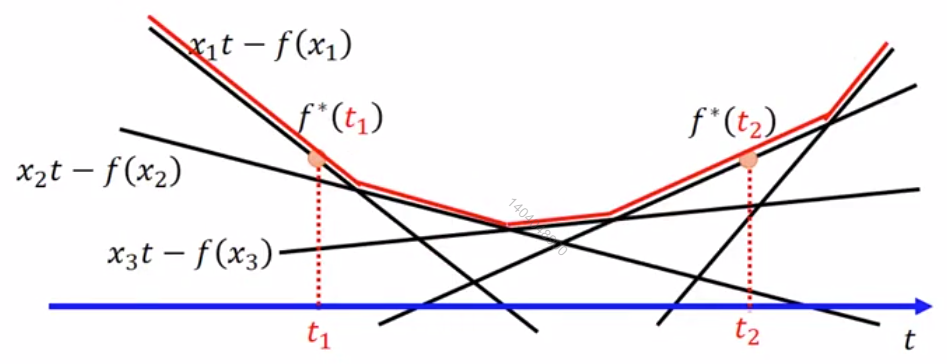

实变函数:以实数作为自变量的函数叫做实变函数。
仿射函数，即最高次数为1的多项式函数。常数项为零的仿射函数称为线性函数。
凸函数:

凸函数的形状像一个碗。
设f为定义在区间I上的函数，若对I上的任意两点x1、x2，和任意的实数λ，总有
f(λx1+(1−λ)x2)≤λf(x1)+(1−λ)f(x2)
通俗点说，就是在函数上任意取两个点，这两个点连成的一条直线。在这两点之间的区间内，这条直线永远在函数的上方。
闭式解（closed form solution）：也叫解析解(analytical solution)，就是一些严格的公式,给出任意的自变量就可以求出其因变量,也就是问题的解, 他人可以利用这些公式计算各自的问题。**
凸优化（convex optimization），或叫做凸最优化，凸最小化，是数学最优化的一个子领域，研究定义于凸集中的凸函数最小化的问题。
Fenchel Conjugate：
对每一个convex function f，都有一个共轭函数f*，满足：
⎩⎨⎧f∗(t)=x∈dom(f)max{xt−f(x)}f(x)=x∈dom(f∗)max{xt−f∗(t)}
公式中的dom(f)是指f的作用域。
如果f是convex，f∗一定也是convex。
f*的效果是这样的：

例子：
f(x)=xlogx和f∗(t)=exp(t−1)是共轭的。
指数函数：
ex=n→∞lim(1+n1)n=n→∞limi=0∑ni!1xi
当x为复数时，称为复指数函数
高斯消元法：https://windmissing.blog.csdn.net/article/details/7191074